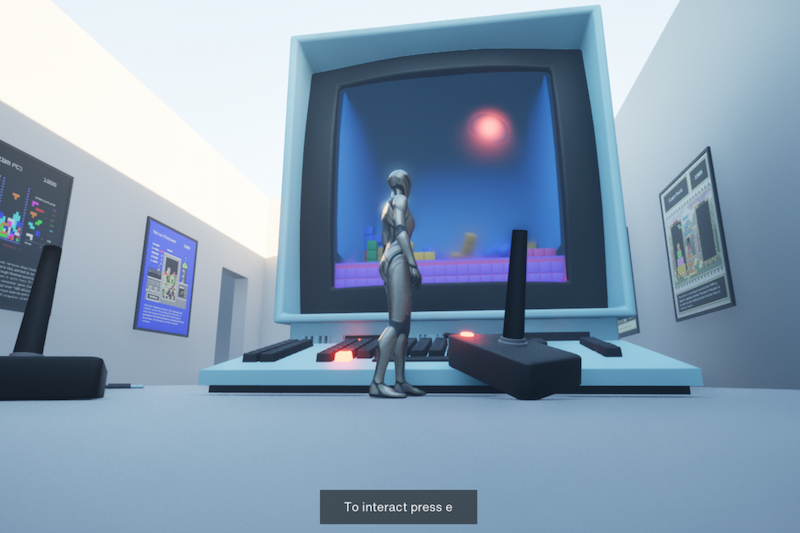
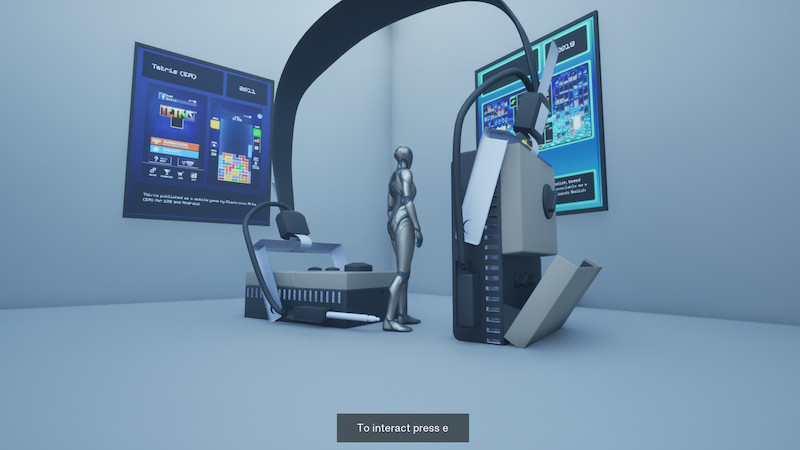
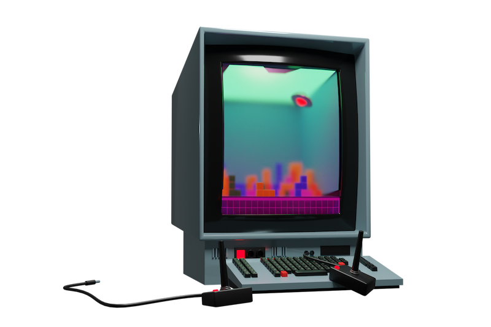
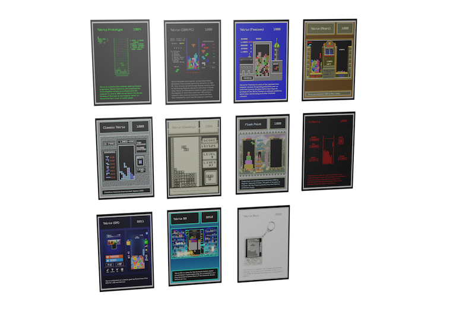
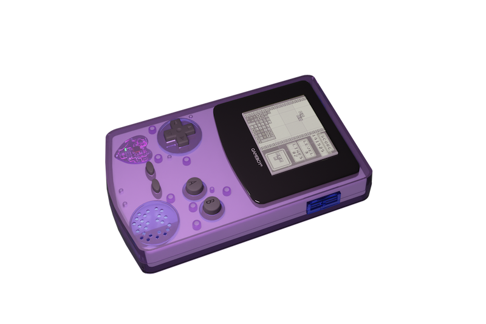

Challenge
Design of a virtual exhibition for the presentation of projects of the Faculty of Design Mannheim. The medium of virtual space is to be used in an experimental way.
Solution
I used the medium of the virtual exhibition to present the subject of Tetris in a way that virtual visitors can interact with it and not only see different artifacts,
but also learn about the game with media content such as podcasts, music and videos.
Output
The “Tetris Room” contains various objects from the game Tetris, such as a Gameboy that plays the Gameboy Tetris theme song at the touch of a button.
There are posters on the walls showing the development of the Tetris game interface over the course of time.
Through the headphones, virtual visitors can listen to a podcast episode about the history of the game.



In “Tetris Room” virtual visitors can interact with the individual elements and learn more about the history of the game Tetris through different media content. The room was created using Blender and the Unreal game engine.